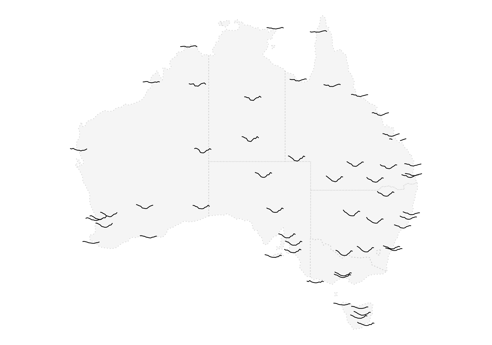
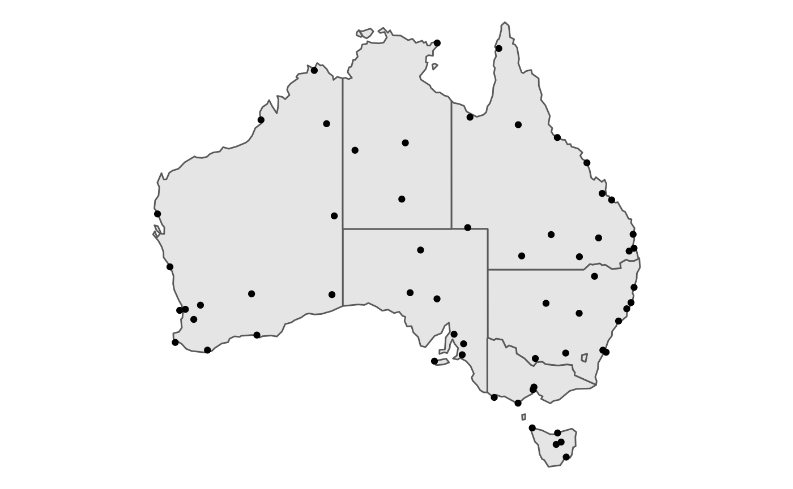
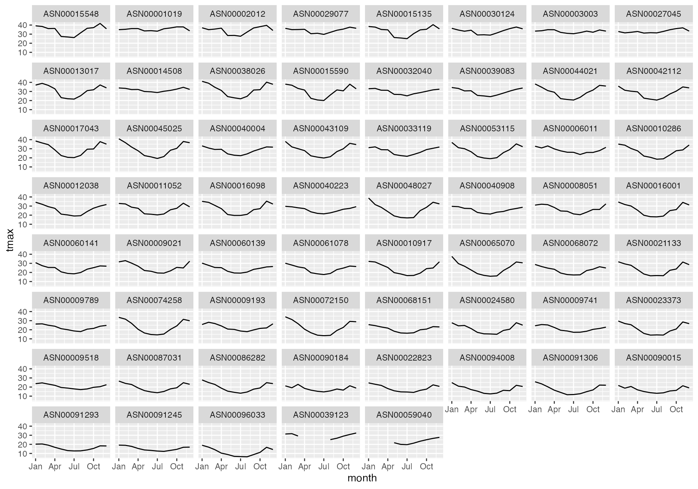
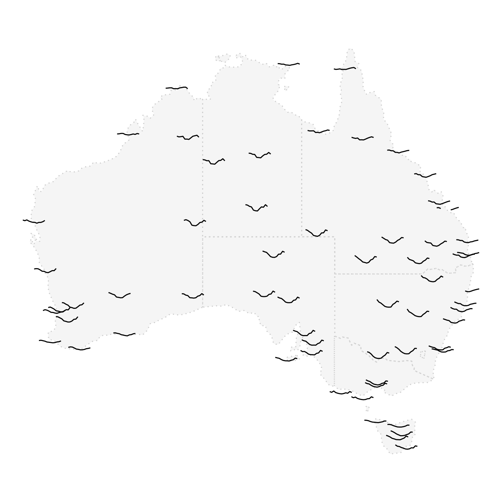

workflow.RmdFor spatio-temporal data, one may want to plot the time series on the map to observe the spatial relationship among sites close to each other. A glyph map allows you to inset the time series, as a glyph, into the map to detect any global or local pattern. Below is an example of the monthly maximum temperature collected from 61 stations in Australia in 2020.

The raw data (oz_climate) records daily precipitation and (maximum and minimum) temperature for 93 stations in a tibble format but it is messy:
oz_climate
#> # A tibble: 2,069,634 × 9
#> station date lat long elevation name prcp tmax tmin
#> <chr> <date> <dbl> <dbl> <dbl> <chr> <dbl> <dbl> <dbl>
#> 1 ASN00001019 1998-09-16 -14.3 127. 23 KALUMBURU, AS NA 36 NA
#> 2 ASN00001019 1998-09-17 -14.3 127. 23 KALUMBURU, AS NA NA 22
#> 3 ASN00001019 1998-09-18 -14.3 127. 23 KALUMBURU, AS NA 35 NA
#> 4 ASN00001019 1998-09-19 -14.3 127. 23 KALUMBURU, AS 0 36 22
#> 5 ASN00001019 1998-09-20 -14.3 127. 23 KALUMBURU, AS 0 35 22
#> 6 ASN00001019 1998-09-21 -14.3 127. 23 KALUMBURU, AS 0 36 22
#> 7 ASN00001019 1998-09-22 -14.3 127. 23 KALUMBURU, AS 0 36 23
#> 8 ASN00001019 1998-09-23 -14.3 127. 23 KALUMBURU, AS 0 37 25
#> 9 ASN00001019 1998-09-24 -14.3 127. 23 KALUMBURU, AS NA 37 23
#> 10 ASN00001019 1998-09-25 -14.3 127. 23 KALUMBURU, AS 0 36 22
#> # … with 2,069,624 more rowsrecordings for each station starts from different years, some even date back to 1860-08-01. There are also missingness for some variables in some stations and sometimes a station could have a variable that is not recorded at all. To be able to produce the glyph map above, several cleaning tasks need to done:
All these steps can be done easily with a cubble.
First let’s turn our data into a cubble using tamp() by supplying the spatial identifier:
nested <- oz_climate %>% tamp(station)
nested
#> # Cubble: station-wise: nested form
#> # Group: station [93]
#> # Leaves: date [date], prcp [dbl], tmax [dbl], tmin [dbl]
#> station lat long elevation name ts
#> <chr> <dbl> <dbl> <dbl> <chr> <list>
#> 1 ASN00001019 -14.3 127. 23 KALUMBURU, AS <tibble [8,149 × …
#> 2 ASN00002012 -18.2 128. 422 HALLS CREEK AIRPORT, AS <tibble [28,184 ×…
#> 3 ASN00003003 -17.9 122. 7.4 BROOME AIRPORT, AS <tibble [29,793 ×…
#> 4 ASN00004032 -20.4 119. 6.4 PORT HEDLAND AIRPORT, AS <tibble [28,707 ×…
#> 5 ASN00005007 -22.2 114. 5 LEARMONTH AIRPORT, AS <tibble [23,895 ×…
#> 6 ASN00006011 -24.9 114. 4 CARNARVON AIRPORT, AS <tibble [27,814 ×…
#> 7 ASN00007176 -23.4 120. 524 NEWMAN AERO, AS <tibble [16,361 ×…
#> 8 ASN00008050 -28.8 115. 3 GERALDTON TOWN, AS <tibble [35,268 ×…
#> 9 ASN00008051 -28.8 115. 33 GERALDTON AIRPORT, AS <tibble [28,663 ×…
#> 10 ASN00009021 -31.9 116. 15.4 PERTH AIRPORT, AS <tibble [28,068 ×…
#> # … with 83 more rowsFiltering 2020 records is an operation on the time dimension since it requires ot decide whether the year component of the date is 2020. A cubble processes all the time dimension operations using the long form, so we first use stretch() to switch nested to the long form and then filter on the year:
long2020 <- nested %>%
stretch() %>%
filter(year(date) == 2020)
long2020
#> # Cubble: time-wise: long form
#> # Group: station [86]
#> # Leaves: station [chr], lat [dbl], long [dbl], elevation [dbl], name [chr]
#> station date prcp tmax tmin
#> <chr> <date> <dbl> <dbl> <dbl>
#> 1 ASN00001019 2020-01-01 46 38.6 25.1
#> 2 ASN00001019 2020-01-02 0 38.8 28.1
#> 3 ASN00001019 2020-01-03 266 37.9 23.6
#> 4 ASN00001019 2020-01-04 0 34.3 26.2
#> 5 ASN00001019 2020-01-05 46 35.4 26.7
#> 6 ASN00001019 2020-01-06 760 27.5 24.8
#> 7 ASN00001019 2020-01-07 1168 31.6 23.2
#> 8 ASN00001019 2020-01-08 1178 32.7 24
#> 9 ASN00001019 2020-01-09 48 34.2 25.1
#> 10 ASN00001019 2020-01-10 0 35.4 26.7
#> # … with 31,340 more rowsThe cubble heading tells us that out of stations records climate data in 2020. For these stations that do record in 2020, we want to find those that have maximum temperature and to do this, we create a logical variable tmax_missing to know if tmax is ever recorded in 2020 for each station. This is a station-wise variable and a nested cubble is used to process station-wise operations. To switch back into the nested form, use tamp() again and to create the tmax_missing, we test if all the tmax, being nested inside ts is NA. If all the tmax is NA, the station will get TRUE and FALSE otherwise.
nested2020 <- long2020 %>%
tamp() %>%
mutate(tmax_missing = ifelse(all(is.na(ts$tmax)), TRUE, FALSE))
nested2020
#> # Cubble: station-wise: nested form
#> # Group: station [86]
#> # Leaves: date [date], prcp [dbl], tmax [dbl], tmin [dbl]
#> station lat long elevation name ts tmax_missing
#> <chr> <dbl> <dbl> <dbl> <chr> <lis> <lgl>
#> 1 ASN00001019 -14.3 127. 23 KALUMBURU, AS <tib… FALSE
#> 2 ASN00002012 -18.2 128. 422 HALLS CREEK AIRPORT, AS <tib… FALSE
#> 3 ASN00003003 -17.9 122. 7.4 BROOME AIRPORT, AS <tib… FALSE
#> 4 ASN00004032 -20.4 119. 6.4 PORT HEDLAND AIRPORT, AS <tib… TRUE
#> 5 ASN00005007 -22.2 114. 5 LEARMONTH AIRPORT, AS <tib… TRUE
#> 6 ASN00006011 -24.9 114. 4 CARNARVON AIRPORT, AS <tib… FALSE
#> 7 ASN00007176 -23.4 120. 524 NEWMAN AERO, AS <tib… TRUE
#> 8 ASN00008050 -28.8 115. 3 GERALDTON TOWN, AS <tib… TRUE
#> 9 ASN00008051 -28.8 115. 33 GERALDTON AIRPORT, AS <tib… FALSE
#> 10 ASN00009021 -31.9 116. 15.4 PERTH AIRPORT, AS <tib… FALSE
#> # … with 76 more rowsWe remove stations don’t have tmax recorded by filtering on the tmax_missing. The filter here is also a station-wise operation and can be processed with the nested form, so we don’t need to switch back using stretch(():
climate_clean <- nested2020 %>%
filter(!tmax_missing)
climate_clean
#> # Cubble: station-wise: nested form
#> # Group: station [61]
#> # Leaves: date [date], prcp [dbl], tmax [dbl], tmin [dbl]
#> station lat long elevation name ts tmax_missing
#> <chr> <dbl> <dbl> <dbl> <chr> <list> <lgl>
#> 1 ASN00001019 -14.3 127. 23 KALUMBURU, AS <tibb… FALSE
#> 2 ASN00002012 -18.2 128. 422 HALLS CREEK AIRPORT, AS <tibb… FALSE
#> 3 ASN00003003 -17.9 122. 7.4 BROOME AIRPORT, AS <tibb… FALSE
#> 4 ASN00006011 -24.9 114. 4 CARNARVON AIRPORT, AS <tibb… FALSE
#> 5 ASN00008051 -28.8 115. 33 GERALDTON AIRPORT, AS <tibb… FALSE
#> 6 ASN00009021 -31.9 116. 15.4 PERTH AIRPORT, AS <tibb… FALSE
#> 7 ASN00009193 -32.0 116. 43.1 ROTTNEST ISLAND, AS <tibb… FALSE
#> 8 ASN00009518 -34.4 115. 13 CAPE LEEUWIN, AS <tibb… FALSE
#> 9 ASN00009741 -34.9 118. 68 ALBANY AIRPORT, AS <tibb… FALSE
#> 10 ASN00009789 -33.8 122. 25 ESPERANCE, AS <tibb… FALSE
#> # … with 51 more rowsThis set of operations gives us 61 stations to work with and below is a map of the location of these weather station.

Daily measures are usually too sparse to be plotted and aggregation is a common treatment for this. Next, we will aggregate the daily maximum temperature into monthly measure and since this is a time-wise operation involving date, we need to switch to the long cubble:
climate_long <- climate_clean %>%
stretch()
climate_long
#> # Cubble: time-wise: long form
#> # Group: station [61]
#> # Leaves: station [chr], lat [dbl], long [dbl], elevation [dbl], name [chr],
#> # tmax_missing [lgl]
#> station date prcp tmax tmin
#> <chr> <date> <dbl> <dbl> <dbl>
#> 1 ASN00001019 2020-01-01 46 38.6 25.1
#> 2 ASN00001019 2020-01-02 0 38.8 28.1
#> 3 ASN00001019 2020-01-03 266 37.9 23.6
#> 4 ASN00001019 2020-01-04 0 34.3 26.2
#> 5 ASN00001019 2020-01-05 46 35.4 26.7
#> 6 ASN00001019 2020-01-06 760 27.5 24.8
#> 7 ASN00001019 2020-01-07 1168 31.6 23.2
#> 8 ASN00001019 2020-01-08 1178 32.7 24
#> 9 ASN00001019 2020-01-09 48 34.2 25.1
#> 10 ASN00001019 2020-01-10 0 35.4 26.7
#> # … with 22,250 more rowsWe create a ym variable from tsibble::yearmonth() and add an additional grouping on ym with group_by(). This allows us create a summary for each station in each month in the next step:
climate_grouped <- climate_long %>%
mutate(ym = tsibble::yearmonth(date)) %>%
group_by(ym)
climate_grouped
#> # Cubble: time-wise: long form
#> # Group: station [61], ym [12]
#> # Leaves: station [chr], lat [dbl], long [dbl], elevation [dbl], name [chr],
#> # tmax_missing [lgl]
#> station date prcp tmax tmin ym
#> <chr> <date> <dbl> <dbl> <dbl> <mth>
#> 1 ASN00001019 2020-01-01 46 38.6 25.1 2020 Jan
#> 2 ASN00001019 2020-01-02 0 38.8 28.1 2020 Jan
#> 3 ASN00001019 2020-01-03 266 37.9 23.6 2020 Jan
#> 4 ASN00001019 2020-01-04 0 34.3 26.2 2020 Jan
#> 5 ASN00001019 2020-01-05 46 35.4 26.7 2020 Jan
#> 6 ASN00001019 2020-01-06 760 27.5 24.8 2020 Jan
#> 7 ASN00001019 2020-01-07 1168 31.6 23.2 2020 Jan
#> 8 ASN00001019 2020-01-08 1178 32.7 24 2020 Jan
#> 9 ASN00001019 2020-01-09 48 34.2 25.1 2020 Jan
#> 10 ASN00001019 2020-01-10 0 35.4 26.7 2020 Jan
#> # … with 22,250 more rowsThe last step to do is to summarise the maximum temperature by mean:
climate_summarised <- climate_grouped %>%
summarise(tmax = mean(tmax, na.rm = TRUE))
climate_summarised
#> # Cubble: time-wise: long form
#> # Group: station [61], ym [12]
#> # Leaves: station [chr], lat [dbl], long [dbl], elevation [dbl], name [chr],
#> # tmax_missing [lgl]
#> station ym tmax
#> <chr> <mth> <dbl>
#> 1 ASN00001019 2020 Jan 34.9
#> 2 ASN00001019 2020 Feb 35.3
#> 3 ASN00001019 2020 Mar 36.1
#> 4 ASN00001019 2020 Apr 36.1
#> 5 ASN00001019 2020 May 33.5
#> 6 ASN00001019 2020 Jun 33.8
#> 7 ASN00001019 2020 Jul 33.3
#> 8 ASN00001019 2020 Aug 35.9
#> 9 ASN00001019 2020 Sep 36.8
#> 10 ASN00001019 2020 Oct 38.0
#> # … with 722 more rowsThis gives all we need to make the time series glyph, let’s see how they look like in a grid view:
climate_summarised %>%
mutate(station = as.factor(station)) %>%
ggplot(aes(x = ym, y = tmax)) +
geom_line() +
facet_wrap(vars(forcats::fct_reorder(station, -tmax))) +
tsibble::scale_x_yearmonth(date_labels = "%b") +
xlab("month")
Note that if your data comes from a tsibble object, you can also use the index_by() to add the grouping on ym. The syntax should looks like:
A glyph map requires a set of major coordinate (x_major and y_major) and minor coordinate (x_minor and y_minor) to locate the glyph in the map. In our case, the major axes are long and lat and minor axes are date and tmax. One last step before making the glyph map is to collect these variables in one table and this can be done with migrate(), which moves the time-invariant variables in the nested cubble into the long cubble:
climate_migrated <- climate_summarised %>%
migrate(lat, long)
climate_migrated
#> # Cubble: time-wise: long form
#> # Group: station [61], ym [12]
#> # Leaves: station [chr], lat [dbl], long [dbl], elevation [dbl], name [chr],
#> # tmax_missing [lgl]
#> station ym tmax lat long
#> <chr> <mth> <dbl> <dbl> <dbl>
#> 1 ASN00001019 2020 Jan 34.9 -14.3 127.
#> 2 ASN00001019 2020 Feb 35.3 -14.3 127.
#> 3 ASN00001019 2020 Mar 36.1 -14.3 127.
#> 4 ASN00001019 2020 Apr 36.1 -14.3 127.
#> 5 ASN00001019 2020 May 33.5 -14.3 127.
#> 6 ASN00001019 2020 Jun 33.8 -14.3 127.
#> 7 ASN00001019 2020 Jul 33.3 -14.3 127.
#> 8 ASN00001019 2020 Aug 35.9 -14.3 127.
#> 9 ASN00001019 2020 Sep 36.8 -14.3 127.
#> 10 ASN00001019 2020 Oct 38.0 -14.3 127.
#> # … with 722 more rowsNow let’s use glyphs from GGally to create the glyph data and here you go, the glyph map you see in the beginning of this vignette!
state_map <- rmapshaper::ms_simplify(ozmaps::abs_ste, keep = 5e-3)
gly_dt <- GGally::glyphs(climate_migrated,
x_major = "long", y_major = "lat",
x_minor = "ym", y_minor = "tmax",
height = 1, width = 2)
plot_map(state_map, color = "grey80", alpha = 0.4, linetype = 3) +
geom_path(data = gly_dt, aes(gx, gy, group = gid))
In the code above, the map underlayed is from ozmaps::abs_ste and rmapshaper::ms_simplify() simplifies the map by keeping only a proportion of points along the coastline to avoid unnecessary details. plot_map() is a function in cubble that wraps around ggplot() + geom_sf(data, ...) to save some typing.